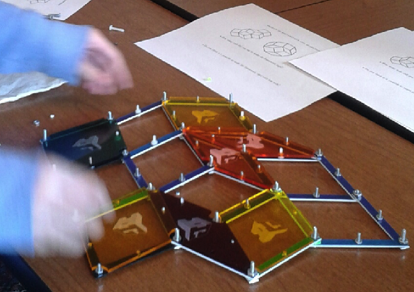

Quasicrystal framework factory
Steps to build quasicrystal frameworks.
1. Find a fabrication lab in your community which has a laser cutter. If you
are in Urbana-Champaign you can go the
CU Fab lab .
2. Decide wether you are using cardboard or acrylic tu build your
models. If you use cardboard make sure it is somewhat sturdy. If you
decide to use acrylic, here are some ideas on what types to use.
You can go to
Inventables
to order the acrylic sheets you want to use. Some recommendations for
buying the acrilic are the following:
- Make sure the acrylic's thickness is 1/16in. This ensures the
rods are sturdy enough and they don't bend. If you are working on a
table
this won't matter too much but if you want to hang up your framework
for display, having thinner acrylic will make your framework bend.
- For the rods I suggest you use opaque acrylic and for the faces I suggest you use translucent. Having translucent acrylic makes the shadow of your framework be of different colors.
3. Once you have the acrylic(or cardboard) sheets for the rods and rhombi, use the template files to cut the
acrylic(or cardboard) with a laser cutter.
To experiment with the rigidity problem it is not strictly necessary
that you print the rhombic faces. You can use extra rods to brace
faces by introducing a diagonal rod to any given face of the framework.
4. Get some screws that fit in the punched wholes of the vertices of
the rods and build any framework you wish to experiment with. The
screws should be around 1/8 inches in diameter for the joints and 1/16
inches in diameter for the midpoint holes. The midpoints are used to
attach the rhombic faces with screws.
5. Get ready to do some rigidity experiments at the rigidity lab.
Some rigidity experiments
